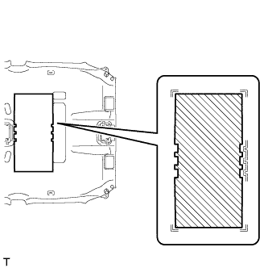

ROOF HEADLINING > REASSEMBLY |
| 1. INSTALL NO. 2 ANTENNA CORD SUB-ASSEMBLY |
Apply new double-sided tape as shown in the illustration.
| Marking Tape |  | Double-sided Tape |
Attach the clamp in the part of the illustration labeled 1.
Align the antenna cord with the marking in the part of the illustration labeled 2 and attach it to the double-sided tape.
Align the antenna cord with the marking in the part of the illustration labeled 3 and attach it to the double-sided tape.
Attach the 5 clamps in the part of the illustration labeled 4.
Align the marking tape on the antenna cord with the V mark on the roof headlining in the part of the illustration labeled 5.
While gathering the slack in the antenna cord in the part of the illustration labeled 6, align the antenna cord with the marking and attach it to the double-sided tape.
Attach the clamps in the parts of the illustration labeled 7 and 8.
Align the antenna cord with the marking in the part of the illustration labeled 9 and attach it to the double-sided tape.
Align the antenna cord with the marking in the part of the illustration labeled 10 and attach it to the double-sided tape.
Attach the antenna cord to the notches in the roof headlining in the parts of the illustration labeled 8 and 11.
| 2. INSTALL NO. 1 ROOF WIRE |
Apply butyl tape to the roof headlining so that the tape is aligned with the wire harness marking as shown in the illustration.
| *1 | Wire Harness Marking | *2 | Butyl Tape |
Align the No. 1 roof wire with the wire harness installation points as shown in the illustration and attach it to the roof headlining to install it.
Attach each clamp.
Turn the visor connectors approximately 90° clockwise to install them to the roof headlining.
| *1 | Visor Connector | *2 | Wire Harness Installation Point |
| 3. INSTALL VANITY LIGHT ASSEMBLY |
Attach the 3 claws to install the vanity light.
| 4. INSTALL NO. 3 ROOF SILENCER PAD |
|  |
Align the No. 3 roof silencer pad with the markings on the roof headlining and install the No. 3 roof silencer pad to the position shown in the illustration using hot-melt glue or double-sided tape.
| 5. INSTALL ROOF SIDE AIR OUTLET REGISTER |
Attach the 6 claws to install the roof side air outlet register.